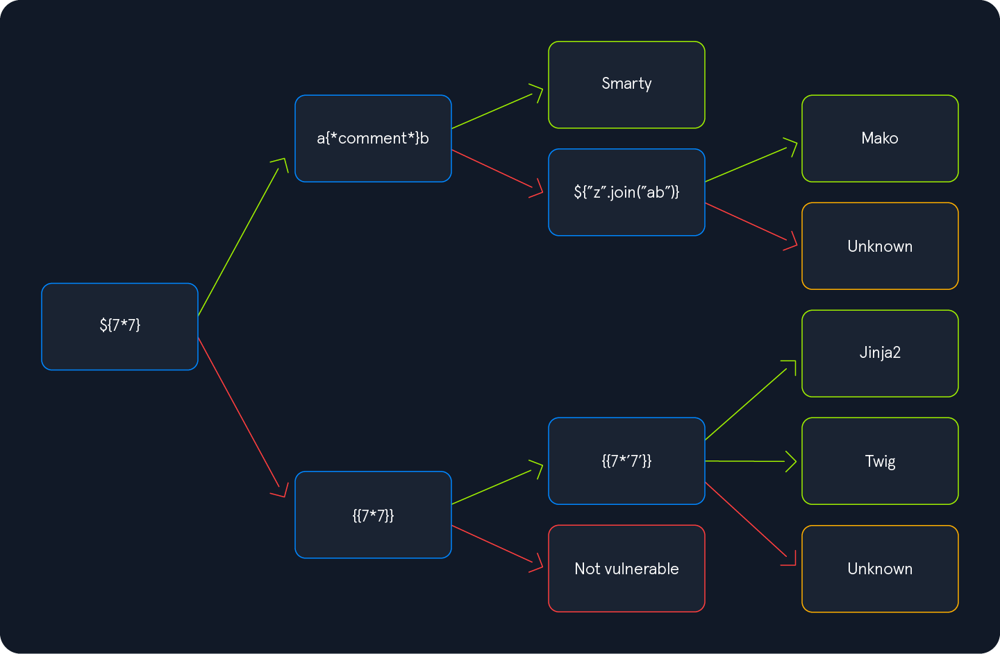
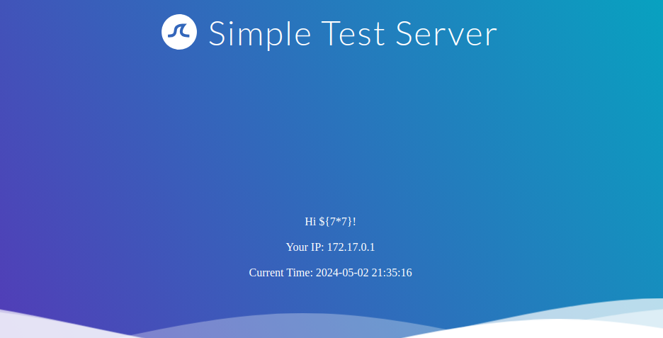
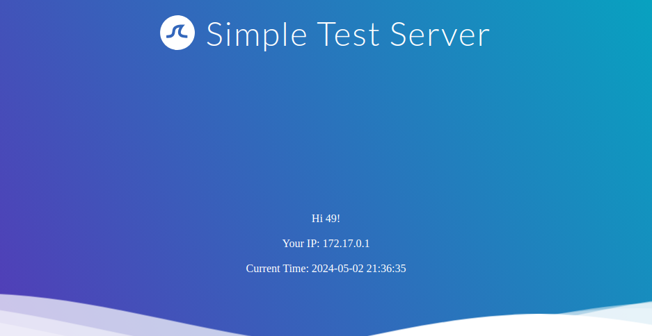

29-ssti
Detect
- look for reflected dynamic inputs
- ${{<%[%'"}}%\.
- inject special characters with meaning in template engines
- Since the above test string should almost certainly violate the template syntax, it should result in an error if the web application is vulnerable to SSTI
Identify template negine

Example


- we then follow green arrow and inject
- {{7*'7'}}
- The result will enable us to deduce the template engine used by the web application. In Jinja, the result will be 7777777 , while in Twig, the result will be 49